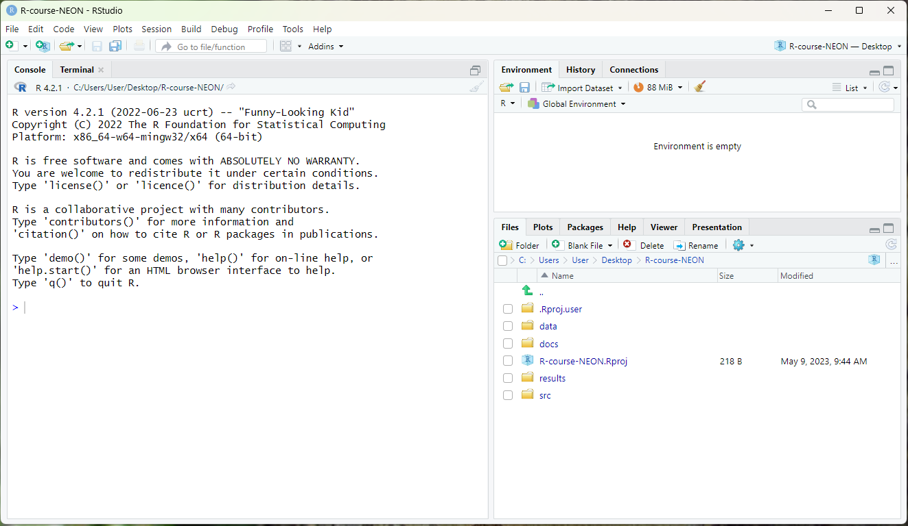

Chapter 2. Intro to R and RStudio
THIS LESSON IS NOT YET READY FOR LEARNERS.
Overview
Science is a multi-step process: once you’ve designed an experiment and collected data, the real fun begins! This lesson will teach you how to start this process using R and RStudio. We will begin with raw data, perform exploratory analyses, and learn how to plot results graphically. This example starts with a dataset from gapminder.org containing population information for many countries through time. Can you read the data into R? Can you plot the population for Senegal? Can you calculate the average income for countries on the continent of Asia? By the end of these lessons you will be able to do things like plot the populations for all of these countries in under a minute!
- Why R?
- R has a wide user community and will always be free (open source - what does this mean)
- user contributed packages: -NEONUtilities
- R and RStudio make it easy for anyone to reproduce your scientific analyses because your analyses are saved as code scripts rather than clicking through a graphical user interface
- It is (relatively) easy to get help with (almost) anything
- R can:
- do computations
- manipulate data
- access files on your computer or the internet
- make graphs
- create documents
- create apps
- almost anything… though it is not always the best tool for every job.
What we will learn
In this lesson learners will:
- discover why so many scientists use R
- describe the contents of the windows in an RStudio session
- install and load packages in R
- write and save a code script in a project folder
- read and view tabular data from a file
- use the console for mathematical calculations
- state the rules for assigning variables
- work with vectors
- learn how to get help and troubleshoot error messages
Key Terms & Commands
Prerequisites
Check that you have the latest version of R and RStudio installed on your machine. This is important, as some packages may not install correctly (or at all) if R is not up to date. For instructions on installing (or updating) R and RStudio, please see Computer Setup.
Once R and RStudio are installed, you will also need to set up the Student Workbook that accompanies this text as an RStudio project. Instructions are in the first exercise from Navigating your computer.
Lesson
Welcome (back) to RStudio!
- R is a programming language
- RStudio is an IDE
- Already learned about Console and Files windows
- Lot’s of other windows that show additional functionality (such as version control (see addt lesson, application building and creating documents)
- In this lesson we will introduce the code, environment, packages and help windows.
We’re going to learn some of the fundamentals of the R language as well as some best practices for organizing code for scientific projects that will make your life easier. We’ll be using RStudio: a free, open-source R Integrated Development Environment (IDE). It provides a built-in editor, works on all platforms (including on servers) and provides many advantages such as integration with version control and project management.
Some notes on semantics:
- R is a program that you installed on your computer that allows you to write code in the R programming language.
- R is a command-line program that executes code one line at a time to produce output (more on this later).
- R code is usually written and saved in files called scripts which you can customize to do almost anything.
- RStudio is a program that allows you to write R code and test it out at the same time (which is why it is called an integrated development environment). It provides a Graphical User Interface (GUI) that makes it easier to interact with R and develop R code.
Let’s start by opening the student workbook RStudio project that accompanies this text. To open an RStudio project, use your computer’s file browser to navigate to the R-course-NEON-workbook folder you downloaded. Inside this folder, double click on the R-course-NEON-workbook.Rproj file (see the lesson: Navigating your computer)
Basic layout
When you first open RStudio, you will be greeted by three panels:
- The interactive R console/Terminal (entire left)
- Environment/History/Connections (tabbed in upper right)
- Files/Plots/Packages/Help/Viewer (tabbed in lower right)
If you opened the R-course-NEON-workbook project then your RStudio session should look like this:

We’re going to start working in the R console to learn about some of the basic functionality of R. Once we start learning more complex code, we will open the Source panel and create an R script for saving the code that we write.
The first thing you will see in the R console is a bunch of information, followed by a “>” and a blinking cursor. This is a command-line interface; it reads and evaluates one line of code at a time, printing out any results of each line to the same console window as it goes. If you type in commands at the command line, R tries to execute them, and then returns a result.
For the first part of this lesson, you should type any code that you see in grey boxes into the command line in the R console and then press enter.
type this into the command lineThis document will show you the expected output of each command in a white boxes below like this:
expected code outputOr, the expected output may show up directly below the line of code
and be preceded by a [1]:
type this into the command line
[1] expected code outputWhat can R do?
As mentioned in the introduction, R can do almost anything, although it is not always the best tool for every job.
Arithmetic and calculations
The simplest thing you could do with R is to do arithmetic:
1 + 100[1] 101And R will print out the answer, with a preceding “[1]”. [1] is the index of the first element of the line being printed in the console. For more information on indexing vectors, see Data structures and operations.
If you type in an incomplete command, R will wait for you to complete it. For example:
1 ++Any time you type return and the R session shows a “+” instead of a “>”, it means it’s waiting for you to complete the command. You can either keep typing the rest of the command:
1 +
100[1] 101or cancel what you were doing. If you want to cancel a command you can type Esc and RStudio will give you back the “>” prompt. Note that if you’re using R outside of RStudio, you need to use Ctrl+C instead of Esc to cancel the command.
Canceling a command isn’t only useful for stopping incomplete commands: you can also use it to tell R to stop running code (for example if it’s taking much longer than you expect), or to get rid of the code you’re currently writing.
When using R as a calculator, the order of operations is the same as you would have learned in math class.
From highest to lowest precedence:
- Parentheses:
(,) - Exponents:
^or** - Multiply:
* - Divide:
/ - Add:
+ - Subtract:
-
3 + 5 * 2[1] 13Use parentheses to group operations in order to force the order of evaluation if it differs from the default, or to make clear what you intend.
(3 + 5) * 2[1] 16Really small or large numbers get a scientific notation:
2/10000[1] 2e-04Which is shorthand for “multiplied by 10^XX”. So
2e-4 is shorthand for 2 * 10^(-4).
You can write numbers in scientific notation too:
5e3 [1] 5000R has many built in mathematical functions. To use a function, we can type its name, followed by open and closing parentheses (just like functions in math!). Functions take arguments as inputs- anything we type inside the parentheses of a function is considered an argument. Depending on the function, the number of arguments can vary from none to multiple. For example:
getwd() # returns an absolute file path of the current working directorydoesn’t require an argument, whereas for the next set of mathematical functions we will need to supply the function a value in order to compute the result.
sin(1) # trigonometry functions[1] 0.841471log(1) # natural logarithm[1] 0log10(10) # base-10 logarithm[1] 1exp(0.5) # e^(1/2)[1] 1.648721Some functions take multiple arguments that are separated by commas.
sum(1, 2, 3) # adds all numeric arguments together[1] 6Did you notice the text at the end of each line of code above? This
text is called a comment because it is preceded by a
hash character (#). This character tells R to ignore
anything that comes after it on the same line. Since this text is not
evaluated we can use it to make notes about what the code does. You do
not need to type the comments into the command line to run the code.
Try this: What should be the ouput for each of these commands?
log(exp(3 + 3)) 2e-1 + 5log(exp(3 + 3)) [1] 6 2e-1 + 5 [1] 5.2
Try this: What do the values
NAandNULLmean?Run each of these commands and try to guess what is happening.
sum(3, NA) sum(3, NULL)sum(3, NA) [1] NA sum(3, NULL) [1] 3
NAis a special placeholder value that means that data is missing.NULLis a special value that means something does not exist. Thus, arithmetic withNAwill by default give aNAresult because missing values are values that we may have tried to collect, but failed to do so. In contrast,NULLvalues do not take up any space and are ignored by default in calculations. We will learn later how to ignore missing values in calculations.
Work with stored values in a computing environment
The first step toward writing code is to store values for use later.
We can store values using the assignment operator <-,
like this:
x <- 1/40Notice that assignment does not print a value. Instead, we stored it
for later in something called a variable.
x now contains the value
0.025:
x[1] 0.025More precisely, the stored value is a decimal approximation
of this fraction called a floating point
number. The value is stored in an object named
x in the environment.
Look for the Environment tab in the top right panel of
RStudio, and you will see that x and its value have
appeared. The variable x can be used in place of a number
in any calculation that expects a number:
log(x)[1] -3.688879Notice also that variables can be reassigned when they already exist:
x <- 100x used to contain the value 0.025 and now it has the
value 100. You can see this in the Environment tab in the
upper right panel.
Assignment values can contain the variable being assigned to (watch
what happens to the values of x and y in the
Environment tab):
x <- x + 1
y <- x * 2The right hand side of the assignment can be any valid R expression. The right hand side is fully evaluated before the assignment occurs.
Try this:
What will be the values of
yandzafter you run these lines of code in order?x <- 10 y <- 2*x z <- x + y x <- 20# type the variable names to print out their values x [1] 20 y [1] 20 z [1] 30
Did you guess correctly? Even though we changed the value of
x in the last line, this does not change the value of
y or z because the values of these two
variables were assigned when x was 10. We
would have to run the assignment of y and z
again to update their values based on the new value of
x:
y <- 2*x
z <- x + y
x
[1] 20
y
[1] 40
z
[1] 60Time saving tip: Instead of retyping commands that you want to run again into the console, use the up arrow key at the command prompt. Each time you press the up arrow the command line will cycle back through commands you typed previously. Use the back arrow key to edit the command before running it again.
Try this: Is R case sensitive?
What happens when you run this code?
y <- 2*XError in eval(expr, envir, enclos): object 'X' not foundWe’ve discovered a very important point about variable names- they are case sensitive!
xis a different variable thanX. Thus, if you try to use a variable that you have not defined in the environment, R will print out an error message saying that it can’t find the variable you used.
Important: Variable names can contain letters, numbers, underscores and periods but no spaces. They must start with a letter or a period followed by a letter (they cannot start with a number nor an underscore). Variables beginning with a period are hidden variables. Different people use different conventions for long variable names, these include
- periods.between.words
- underscores_between_words
- camelCaseToSeparateWords
What you use is up to you, but be consistent.
You should also avoid using variable names that are the same as
values or functions in R (e.g., pi, sum,
c, names, data). In general, try
to use a name that is specific to what the variable represents. If
you’re not sure whether a name is used in R, you can use the
? to look it up (more on this later):
?mean?averageNo documentation for 'average' in specified packages and libraries:
you could try '??average'If a name already exists for a function, it will open up a Help window. If the name is available for you to use, then the console will report that it could not find any documentation.
It is also possible to use the = operator for
assignment:
x = 1/40But this is much less common among R users. The most important thing
is to be consistent with the operator you use. There
are occasionally places where it is less confusing to use
<- than =, and it is the most common symbol
used in the community. So the recommendation is to use
<-.
Try this: Which of the following are valid R variable names?
min_height max.height _age .mass MaxLength min-length 2widths celsius2kelvin exp piThese can be used as R variables:
min_heightmax.heightMaxLengthcelsius2kelvinThis creates a hidden variable:
.massThese cannot be used to create a variable:
_agemin-length2widthsThese should not be used as variable names because they already exist in R:
piexp
Calculations on multiple stored values at once
R can assign multiple values to the same object- one way to do this is using a vector, an ordered list of values that are of the same data type (e.g. numbers, text, TRUE/FALSE). In Data structures and operations we will explain in much more detail the different types of data and objects you can create in R, but for now let’s just explore how R does arithmetic with vectors.
You can construct a vector using the c() function:
ages <- c(18, 19, 21, 17)
firstNames <- c("Sasha", "Everett", "Hope", "Arturo")
ages
[1] 18 19 21 17
firstNames
[1] "Sasha" "Everett" "Hope" "Arturo" You can also put vectors together using the c()
function:
c(20, ages, 40)[1] 20 18 19 21 17 40To select an element in a list, type the index of the element desired inside square brackets. For example, to select the second element:
firstNames[2][1] "Everett"You can select multiple elements at once by typing a vector of indices inside the square brackets:
firstNames[c(3, 1)][1] "Hope" "Sasha"A colon : is a special operator that will create a
vector of integers in order:
1:4[1] 1 2 3 44:1[1] 4 3 2 1To make a vector with any sequence of integers, use the
seq() function:
seq(1, 10, by = 2)[1] 1 3 5 7 9seq(0, 100, by = 10) [1] 0 10 20 30 40 50 60 70 80 90 100Try this: Can you predict what each of the following lines of code will return?
c("Betsy", firstNames) firstNames[4:1] ages[c(2, 4)] ages[1, 3] c(firstNames, ages)c("Betsy", firstNames) [1] "Betsy" "Sasha" "Everett" "Hope" "Arturo" firstNames[4:1] [1] "Arturo" "Hope" "Everett" "Sasha" ages[c(2, 4)] [1] 19 17ages[1, 3] Error in ages[1, 3]: incorrect number of dimensionsWhy did
ages[1, 3]give an error message? Notice that1, 3is not a vector. In order to select elements 1 and 3 fromageswe need to first create a vector containing the integers 1 and 3:c(1, 3)and then place this inside the brackets:ages[c(1, 3)].c(firstNames, ages) [1] "Sasha" "Everett" "Hope" "Arturo" "18" "19" "21" [8] "17"Notice that when we concatenated
firstNamesandagesall of the ages turned into text with each number surrounded by quotes. This is because all elements in a vector must have the same data type, either numbers or text, but not both. R tried to fix this by using the data type of the first vector we supplied.
Vectors are useful because we can use them to do multiple calculations at once. Adding or multiplying a vector by a scalar applies the operation to each element of the vector.
ages + 10[1] 28 29 31 272 * ages[1] 36 38 42 34ages / 2[1] 9.0 9.5 10.5 8.5Arithmetic between two vectors is conducted element by element:
ages + 1:4[1] 19 21 24 21ages - ages[1] 0 0 0 0ages[1:2] - ages[3:4][1] -3 2Try this:
- Calculate the sum of all integers between 1 and 100.
- Calculate the difference between the sum of all odd numbers between 1 and 50 and the sum of all even numbers between 1 and 50.
There are lots of ways to solve this problem. Here is one way.
# Sum of all integers between 1 and 100 sum(1:100) [1] 5050 # Difference between sum of odds and evens between 1 and 50 odds <- seq(1, 50, 2) # a vector with all odd numbers evens <- seq(2, 50, 2) # a vector with all even numbers sum(odds) - sum(evens) # calculate sum of each vector, then take the difference [1] -25
Managing your environment
There are a few useful commands you can use to interact with the R session.
ls will list all of the variables and functions stored
in the global environment (your working R session):
ls() [1] "ages" "chp_num" "chp_str" "chptable"
[5] "CStable" "dat" "evens" "firstNames"
[9] "gapminder" "get_chpName" "get_chpNum" "get_LO"
[13] "knitr_fig_path" "LOtable" "odds" "x"
[17] "y" "z" Tip: hidden objects
Like in the shell,
lswill hide any variables or functions starting with a “.” by default. To list all objects, typels(all.names=TRUE)instead
Note here that we didn’t give any arguments to ls, but
we still needed to give the parentheses to tell R to call the
function.
If we type ls by itself, R prints a bunch of code
instead of a listing of objects.
lsfunction (name, pos = -1L, envir = as.environment(pos), all.names = FALSE,
pattern, sorted = TRUE)
{
if (!missing(name)) {
pos <- tryCatch(name, error = function(e) e)
if (inherits(pos, "error")) {
name <- substitute(name)
if (!is.character(name))
name <- deparse(name)
warning(gettextf("%s converted to character string",
sQuote(name)), domain = NA)
pos <- name
}
}
all.names <- .Internal(ls(envir, all.names, sorted))
if (!missing(pattern)) {
if ((ll <- length(grep("[", pattern, fixed = TRUE))) &&
ll != length(grep("]", pattern, fixed = TRUE))) {
if (pattern == "[") {
pattern <- "\\["
warning("replaced regular expression pattern '[' by '\\\\['")
}
else if (length(grep("[^\\\\]\\[<-", pattern))) {
pattern <- sub("\\[<-", "\\\\\\[<-", pattern)
warning("replaced '[<-' by '\\\\[<-' in regular expression pattern")
}
}
grep(pattern, all.names, value = TRUE)
}
else all.names
}
<bytecode: 0x000001ebecba99b0>
<environment: namespace:base>What’s going on here?
Like everything in R, ls is the name of an object, and
entering the name of an object by itself prints the contents of the
object. The object x that we created earlier contains
0.025:
x[1] 0.025The object ls contains the R code that makes the
ls function work! We’ll talk more about how functions work
and start writing our own later.
You can use rm to delete objects you no longer need:
rm(x)If you have lots of things in your environment and want to delete all
of them, you can pass the results of ls to the
rm function:
rm(list = ls())In this case we’ve combined the two. Like the order of operations, anything inside the innermost parentheses is evaluated first, and so on.
In this case we’ve specified that the results of ls
should be used for the list argument in rm.
When assigning values to arguments by name, you must use the
= operator!!
If instead we use <-, there will be unintended side
effects, or you may get an error message:
rm(list <- ls())Error in rm(list <- ls()): ... must contain names or character stringsTip: Warnings vs. Errors
Pay attention when R does something unexpected! Errors, like above, are thrown when R cannot proceed with a calculation. Warnings on the other hand usually mean that the function has run, but it probably hasn’t worked as expected.
In both cases, the message that R prints out usually give you clues how to fix a problem.
Notice that although rm() and ls() are similar to the shell commands rm and ls, they operate in different spaces. The Terminal window in RStudio accesses the file system on your computer. The R Console accesses objects that you create during a specific R session. Once your close R, these objects disappear forever; they are not saved on your file system.
Writing code in scripts
- R and RStudio make it easy for anyone to reproduce your scientific analyses because your analyses are saved as code scripts rather than clicking through a graphical user interface
2 4 write and save a code script in a project folder learners will
2 5 write and save a code script use R and RStudio to 2 6 write comments in a code script use R and RStudio to
Once you open files, such as R scripts, an editor panel will also open in the top left.

R scripts
Any commands that you write in the R console can be saved in to a file to be re-run again. Files containing R code to be ran in this way are called R scripts. R scripts have
.Rat the end of their names to let you know what they are.
Try this: Create and save a new R script
Workflow within RStudio
There are two main ways one can work within RStudio:
- Test and play within the interactive R console then copy code into a
.R file to run later.
- This works well when doing small tests and initially starting off.
- It quickly becomes laborious
- Start writing in a .R file and use RStudio’s short cut keys for the
Run command to push the current line, selected lines or modified lines
to the interactive R console.
- This is a great way to start; all your code is saved for later
- You will be able to run the file you create from within RStudio or
using R’s
source()function.
Tip: Running segments of your code
RStudio offers you great flexibility in running code from within the editor window. There are buttons, menu choices, and keyboard shortcuts. To run the current line, you can 1. click on the
Runbutton above the editor panel, or 2. select “Run Lines” from the “Code” menu, or 3. type Ctrl+Return in Windows or Linux or ⌘+Return on OS X. (This shortcut can also be seen by hovering the mouse over the button). To run a block of code, select it and thenRun. If you have modified a line of code within a block of code you have just run, there is no need to reselect the section andRun, you can use the next button along,Re-run the previous region. This will run the previous code block including the modifications you have made.
Try this: Open and run an R script
Open this script. Run it line by line and point out the part of the R script from the prior section (e.g. read a table, assign a variable, etc) Run the whole thing. Close it and use source() to run it from the file.
The text after each line of code is called a “comment”. Anything that
follows after the hash symbol # is ignored by R when it
executes code.
Reading data from files
2 5 read and view tabular data from a file learners will
2 7 read a data table from a file use R and RStudio to
tab complete reminder
EXTRA: you can download your own data set and read it into R
Try this: Download and save a NEON Dataset
here.
- Download the file (right mouse click on the link above -> “Save link as” / “Save file as”, or click on the link and after the page loads, press Ctrl+S or choose File -> “Save page as”)
- Make sure it’s saved under the name
gapminder_data.csv- Save the file in the
data/folder within your project.We will load and inspect these data later. :::
Challenge 4
It is useful to get some general idea about the dataset, directly from the command line, before loading it into R. Understanding the dataset better will come in handy when making decisions on how to load it in R. Use the command-line shell to answer the following questions: 1. What is the size of the file? 2. How many rows of data does it contain? 3. What kinds of values are stored in this file?
Solution to Challenge 4
By running these commands in the shell:
ls -lh data/gapminder_data.csv-rw-r--r-- 1 User User 80K Apr 17 10:03 data/gapminder_data.csvThe file size is 80K.
wc -l data/gapminder_data.csv1705 data/gapminder_data.csvThere are 1705 lines. The data looks like:
head data/gapminder_data.csvcountry,year,pop,continent,lifeExp,gdpPercap Afghanistan,1952,8425333,Asia,28.801,779.4453145 Afghanistan,1957,9240934,Asia,30.332,820.8530296 Afghanistan,1962,10267083,Asia,31.997,853.10071 Afghanistan,1967,11537966,Asia,34.02,836.1971382 Afghanistan,1972,13079460,Asia,36.088,739.9811058 Afghanistan,1977,14880372,Asia,38.438,786.11336 Afghanistan,1982,12881816,Asia,39.854,978.0114388 Afghanistan,1987,13867957,Asia,40.822,852.3959448 Afghanistan,1992,16317921,Asia,41.674,649.3413952
Working directory - FIXME
Knowing R’s current working directory is important because when you need to access other files (for example, to import a data file), R will look for them relative to the current working directory.
Each time you create a new RStudio Project, it will create a new
directory for that project. When you open an existing
.Rproj file, it will open that project and set R’s working
directory to the folder that file is in.
Challenge 5
You can check the current working directory with the
getwd()command, or by using the menus in RStudio.
- In the console, type
getwd()(“wd” is short for “working directory”) and hit Enter.- In the Files pane, double click on the
datafolder to open it (or navigate to any other folder you wish). To get the Files pane back to the current working directory, click “More” and then select “Go To Working Directory”.You can change the working directory with
setwd(), or by using RStudio menus.
- In the console, type
setwd("data")and hit Enter. Typegetwd()and hit Enter to see the new working directory.- In the menus at the top of the RStudio window, click the “Session” menu button, and then select “Set Working Directory” and then “Choose Directory”.
- In the windows navigator that opens, navigate back to the project directory, and click “Open”. Note that a
setwdcommand will automatically appear in the console. {: .challenge}
Tip: File does not exist errors
When you’re attempting to reference a file in your R code and you’re getting errors saying the file doesn’t exist, it’s a good idea to check your working directory. You need to either provide an absolute path to the file, or you need to make sure the file is saved in the working directory (or a subfolder of the working directory) and provide a relative path.
Installing and loading packages
“base” R is the functionality that comes installed with R, but the powerfull thing about R is its user community who have created thousands of “packages” that increase its functionality.
2 3 install and load packages in R learners will
It is possible to add functions to R by writing a package, or by obtaining a package written by someone else. As of this writing, there are over 10,000 packages available on CRAN (the comprehensive R archive network). R and RStudio have functionality for managing packages:
- You can see what packages are installed by typing
installed.packages() - You can install packages by typing
install.packages("packagename"), wherepackagenameis the package name, in quotes. - You can update installed packages by typing
update.packages() - You can remove a package with
remove.packages("packagename") - You can make a package available for use with
library(packagename)
Packages can also be viewed, loaded, and detached in the Packages tab of the lower right panel in RStudio. Clicking on this tab will display all of the installed packages with a checkbox next to them. If the box next to a package name is checked, the package is loaded and if it is empty, the package is not loaded. Click an empty box to load that package and click a checked box to detach that package.
Packages can be installed and updated from the Package tab with the Install and Update buttons at the top of the tab.
Challenge 5
Install the following packages:
ggplot2,plyr,gapminderSolution to challenge 5
We can use the
install.packages()command to install the required packages.install.packages("ggplot2") install.packages("plyr") install.packages("gapminder")An alternate solution, to install multiple packages with a single
install.packages()command is:install.packages(c("ggplot2", "plyr", "gapminder"))
Getting help
2 9 learn how to get help and troubleshoot error messages learners will 2 8 access and understand a function’s documentation page use R and RStudio to
Don’t worry about trying to remember every function in R. You can look them up on Google, or if you can remember the start of the function’s name, use the tab completion in RStudio.
This is one advantage that RStudio has over R on its own, it has auto-completion abilities that allow you to more easily look up functions, their arguments, and the values that they take.
Typing a ? before the name of a command will open the
help page for that command. When using RStudio, this will open the
‘Help’ pane; if using R in the terminal, the help page will open in your
browser. The help page will include a detailed description of the
command and how it works. Scrolling to the bottom of the help page will
usually show a collection of code examples which illustrate command
usage. We’ll go through an example later.
R, and every package, provide help files for functions. The general syntax to search for help on any function, “function_name”, from a specific function that is in a package loaded into your namespace (your interactive R session) is:
?function_name
help(function_name)For example take a look at the help file for
write.table(), we will be using a similar function in an
upcoming episode.
?write.table()This will load up a help page in RStudio (or as plain text in R itself).
Each help page is broken down into sections:
- Description: An extended description of what the function does.
- Usage: The arguments of the function and their default values (which can be changed).
- Arguments: An explanation of the data each argument is expecting.
- Details: Any important details to be aware of.
- Value: The data the function returns.
- See Also: Any related functions you might find useful.
- Examples: Some examples for how to use the function.
Different functions might have different sections, but these are the main ones you should be aware of.
Notice how related functions might call for the same help file:
?write.table()
?write.csv()This is because these functions have very similar applicability and often share the same arguments as inputs to the function, so package authors often choose to document them together in a single help file.
Tip: Running Examples
From within the function help page, you can highlight code in the Examples and type Ctrl+Return to run it in RStudio console. This gives you a quick way to get a feel for how a function works.
Tip: Reading Help Files
One of the most daunting aspects of R is the large number of functions available. It would be prohibitive, if not impossible to remember the correct usage for every function you use. Luckily, using the help files means you don’t have to remember that!
Special Operators
To seek help on special operators, use quotes or backticks:
?"<-"
?`<-`Getting Help with Packages
Many packages come with “vignettes”: tutorials and extended example
documentation. Without any arguments, vignette() will list
all vignettes for all installed packages;
vignette(package="package-name") will list all available
vignettes for package-name, and
vignette("vignette-name") will open the specified
vignette.
If a package doesn’t have any vignettes, you can usually find help by
typing help("package-name").
RStudio also has a set of excellent cheatsheets for many packages.
When You Remember Part of the Function Name
If you’re not sure what package a function is in or how it’s specifically spelled, you can do a fuzzy search:
??function_nameA fuzzy search is when you search for an approximate string match. For example, you may remember that the function to set your working directory includes “set” in its name. You can do a fuzzy search to help you identify the function:
??setWhen You Have No Idea Where to Begin
If you don’t know what function or package you need to use CRAN Task Views is a specially maintained list of packages grouped into fields. This can be a good starting point.
When Your Code Doesn’t Work: Seeking Help from Your Peers
If you’re having trouble using a function, 9 times out of 10, the
answers you seek have already been answered on Stack Overflow. You can search
using the [r] tag. Please make sure to see their page on how to ask a good
question.
If you can’t find the answer, there are a few useful functions to help you ask your peers:
?dputWill dump the data you’re working with into a format that can be copied and pasted by others into their own R session.
sessionInfo()R version 4.2.1 (2022-06-23 ucrt)
Platform: x86_64-w64-mingw32/x64 (64-bit)
Running under: Windows 10 x64 (build 22621)
Matrix products: default
locale:
[1] LC_COLLATE=English_United States.utf8
[2] LC_CTYPE=English_United States.utf8
[3] LC_MONETARY=English_United States.utf8
[4] LC_NUMERIC=C
[5] LC_TIME=English_United States.utf8
attached base packages:
[1] stats graphics grDevices utils datasets methods base
other attached packages:
[1] ggplot2_3.3.6 dplyr_1.0.9 knitr_1.41
loaded via a namespace (and not attached):
[1] highr_0.10 pillar_1.7.0 bslib_0.4.2 compiler_4.2.1
[5] jquerylib_0.1.4 tools_4.2.1 digest_0.6.29 jsonlite_1.8.0
[9] evaluate_0.15 lifecycle_1.0.3 tibble_3.1.7 gtable_0.3.0
[13] pkgconfig_2.0.3 rlang_1.0.6 cli_3.5.0 rstudioapi_0.13
[17] yaml_2.3.6 xfun_0.36 fastmap_1.1.0 withr_2.5.0
[21] stringr_1.5.0 generics_0.1.2 vctrs_0.4.1 sass_0.4.4
[25] grid_4.2.1 tidyselect_1.1.2 glue_1.6.2 R6_2.5.1
[29] fansi_1.0.3 rmarkdown_2.19 farver_2.1.0 purrr_0.3.4
[33] magrittr_2.0.3 scales_1.2.0 codetools_0.2-18 htmltools_0.5.4
[37] ellipsis_0.3.2 colorspace_2.0-3 labeling_0.4.2 utf8_1.2.2
[41] stringi_1.7.8 munsell_0.5.0 cachem_1.0.6 crayon_1.5.1 Will print out your current version of R, as well as any packages you have loaded. This can be useful for others to help reproduce and debug your issue.
Challenge 1
Look at the help page for the
cfunction. What kind of vector do you expect will be created if you evaluate the following:c(1, 2, 3) c('d', 'e', 'f') c(1, 2, 'f')Solution to Challenge 1
The
c()function creates a vector, in which all elements are of the same type. In the first case, the elements are numeric, in the second, they are characters, and in the third they are also characters: the numeric values are “coerced” to be characters.
Challenge 2
Look at the help for the
pastefunction. You will need to use it later. What’s the difference between thesepandcollapsearguments?Solution to Challenge 2
To look at the help for the
paste()function, use:help("paste") ?pasteThe difference between
sepandcollapseis a little tricky. Thepastefunction accepts any number of arguments, each of which can be a vector of any length. Thesepargument specifies the string used between concatenated terms — by default, a space. The result is a vector as long as the longest argument supplied topaste. In contrast,collapsespecifies that after concatenation the elements are collapsed together using the given separator, the result being a single string.It is important to call the arguments explicitly by typing out the argument name e.g
sep = ","so the function understands to use the “,” as a separator and not a term to concatenate. e.g.paste(c("a","b"), "c")[1] "a c" "b c"paste(c("a","b"), "c", ",")[1] "a c ," "b c ,"paste(c("a","b"), "c", sep = ",")[1] "a,c" "b,c"paste(c("a","b"), "c", collapse = "|")[1] "a c|b c"paste(c("a","b"), "c", sep = ",", collapse = "|")[1] "a,c|b,c"(For more information, scroll to the bottom of the
?pastehelp page and look at the examples, or tryexample('paste').) {: .solution} {: .challenge}
Challenge 3
Use help to find a function (and its associated parameters) that you could use to load data from a tabular file in which columns are delimited with “ (tab) and the decimal point is a”.” (period). This check for decimal separator is important, especially if you are working with international colleagues, because different countries have different conventions for the decimal point (i.e. comma vs period). Hint: use
??"read table"to look up functions related to reading in tabular data.Solution to Challenge 3
The standard R function for reading tab-delimited files with a period decimal separator is read.delim(). You can also do this with
read.table(file, sep="\t")(the period is the default decimal separator forread.table()), although you may have to change thecomment.charargument as well if your data file contains hash (#) characters.
Exercises
After completing these exercises, learners will be able to use R and RStudio to:
- execute simple mathematical calculations
- assign and manipulate variables
- assign, subset and manipulate data in a vector
- execute vector algebra
- write and save a code script
- write comments in a code script
- read a data table from a file
- access and understand a function’s documentation page
2 1 execute simple mathematical calculations use R and RStudio to 2 2 assign and manipulate variables use R and RStudio to 2 3 “assign, subset and manipulate data in a vector” use R and RStudio to 2 4 execute vector algebra use R and RStudio to 2 5 write and save a code script use R and RStudio to 2 6 write comments in a code script use R and RStudio to 2 7 read a data table from a file use R and RStudio to 2 8 access and understand a function’s documentation page use R and RStudio to
Number all exercises using the module number. Include starter code in the /exercises folder if appropriate.
2.1
2.2
Challenge 2
What will be the value of each variable after each statement in the following program?
mass <- 47.5 age <- 122 mass <- mass * 2.3 age <- age - 20Solution to challenge 2
mass <- 47.5This will give a value of 47.5 for the variable mass
age <- 122This will give a value of 122 for the variable age
mass <- mass * 2.3This will multiply the existing value of 47.5 by 2.3 to give a new value of 109.25 to the variable mass.
age <- age - 20This will subtract 20 from the existing value of 122 to give a new value of 102 to the variable age.
Challenge 4
Clean up your working environment by deleting the mass and age variables.
Solution to challenge 4
We can use the
rmcommand to accomplish this taskrm(age, mass)
Sources and Resources
This lesson was adapted from Zimmerman et al. (2019) episodes 1 and 3 by Jes Coyle.
This lesson utilizes data from National Ecological Observatory Network (NEON) (2023a) and National Ecological Observatory Network (NEON) (2023b).
Additional Resources
Cited References
(function() {
var codes = document.querySelectorAll('.solution');
var code, i, d, s, p, h;
for (i = 0; i < codes.length; i++) {
code = codes[i];
p = code.parentNode;
d = document.createElement('details');
s = document.createElement('summary');
h = document.createElement('strong');
h.innerText = 'Solution:';
// <details><summary><em>Solution:</em></summary></details>
s.appendChild(h);
d.appendChild(s);
// move the code into <details>
p.replaceChild(d, code);
d.appendChild(code);
}
})();Introduction to Computing in R with NEON